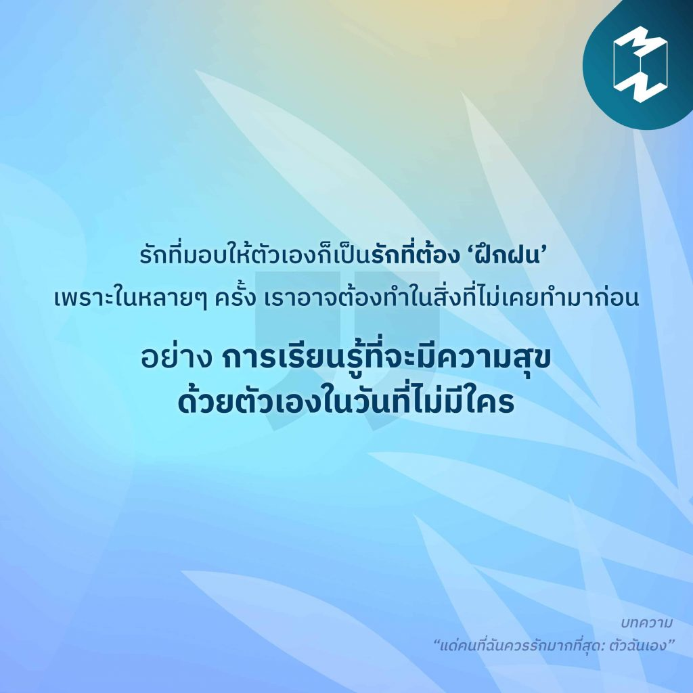

9)“แด่คนที่ฉันควรรักมากที่สุด: ตัวฉันเอง”
“รักที่มอบให้ตัวเองก็เป็นรักที่ต้อง ‘ฝึกฝน’ เพราะในหลายๆ ครั้ง เราอาจต้องทำในสิ่งที่ไม่เคยทำมาก่อน อย่าง การเรียนรู้ที่จะมีความสุขด้วยตัวเองในวันที่ไม่มีใคร” ‘รักตัวเอง’ ทักษะสำคัญในการใช้ชีวิตและหนึ่งในทักษะที่ส่งผลอย่างมากต่อความสำเร็จด้านต่างๆ แต่ในขณะเดียวกัน ทักษะนี้เป็นสิ่งที่เราต้องเรียนรู้เองและไม่มีสอนในโรงเรียน! ความรักที่ให้ตัวเองหน้าตาเป็นแบบไหน แล้วเราจะเริ่มรักตัวเองได้อย่างไร